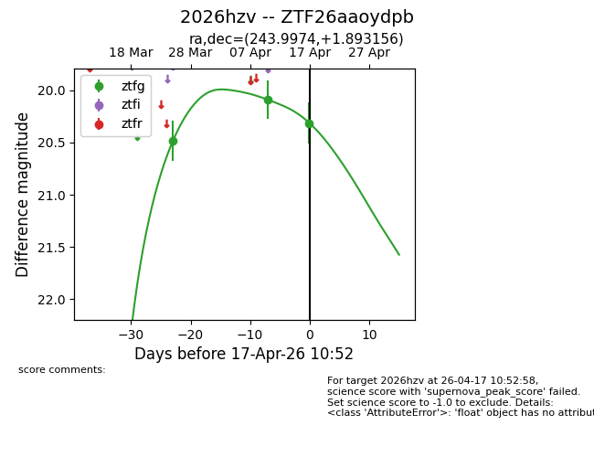
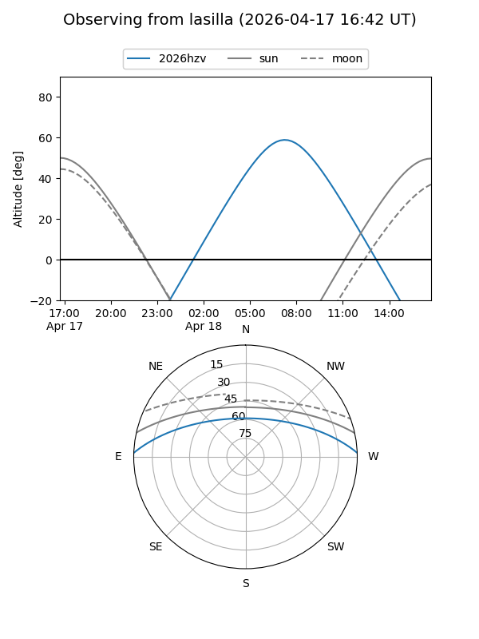
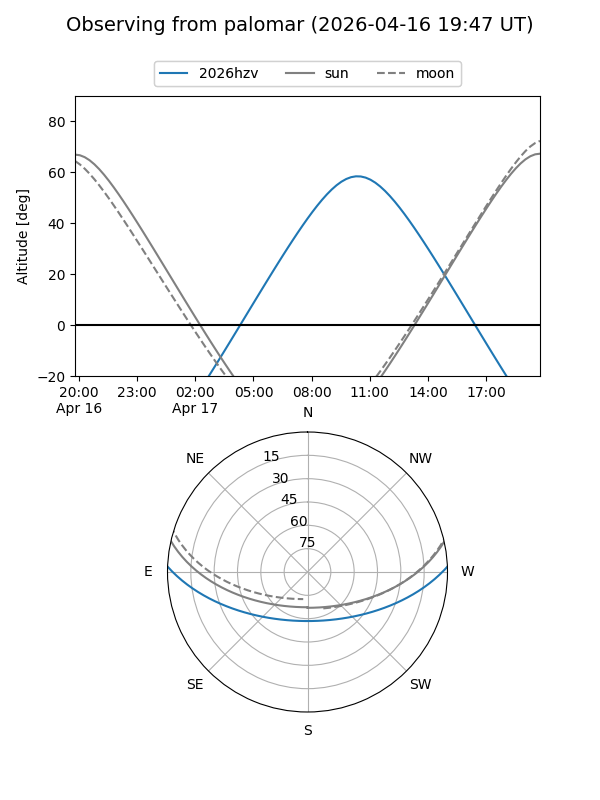
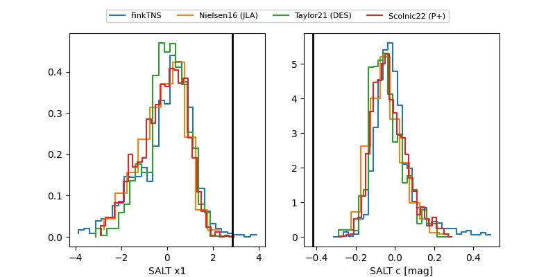

2026hzv
Target 2026hzv at 2026-04-17 11:01
Aliases and brokers:
FINK: link
Lasair: link
ALeRCE: link
TNS: link
YSE: link
alt names
ZTF26aaoydpb (ztf,fink_ztf)
2026hzv (tns,yse)
Coordinates:
equatorial (ra, dec) = 243.9974,+1.89316
equatorial (HMS+DMS) = 16:15:59.38,+01:53:35.36
galactic (l, b) = (14.6869,+34.97227)
Flags:
Photometry:
last ztfg=20.31
3 ztfg detections
Lightcurve

Visibility


Additional plots
